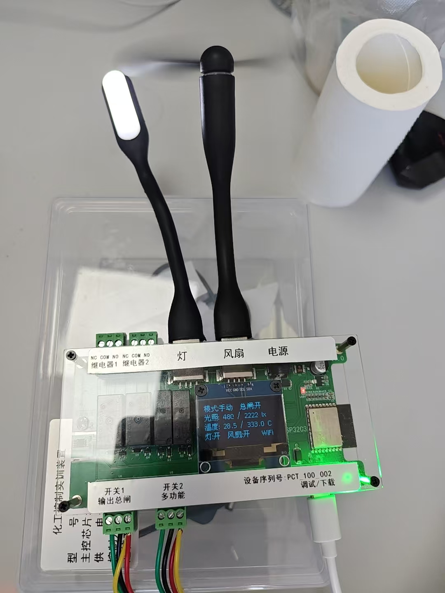

1. 产品总览
PCT-100 是一款基于 ESP32 核心的高性能智能化工控制实训装置。由我们小组独立研发设计，旨在为嵌入式系统开发、物联网通信以及实时操作系统（FreeRTOS）的学习提供一套高可靠性、高响应速度的软硬一体化实践平台。
核心架构亮点： 装置内部引入了 FreeRTOS 多线程内核，将网络通信任务（WiFi/MQTT）与本地硬件控制完全解耦。主循环保持 200Hz 的极速本地控灾响应，配合电磁干扰静默看门狗，实现了工业级的运行稳定性。
2. 核心硬件参数
装置集成了多种工业级高精度传感器与多路继电器执行机构，具体的硬件引脚拓扑及功能定义如下：
| 模块名称 | 物理引脚 | 技术特征与功能说明 |
|---|---|---|
| 核心微控制器 | ESP32-WROOM | 双核 240MHz 处理器，负责多线程任务并发调度与 2.4GHz Wi-Fi 骨干网链接。 |
| 高精度温度感知 | GPIO 10 | 基于 DS18B20 传感器。采用 Dallas OneWire 单总线协议。支持非阻塞式异步温度转换（读取周期为 750ms），系统默认高温报警阈值为 34.0℃。 |
| 环境光照照度计 | GPIO 1 (ADC1_CH1) | 采用光敏电阻配合 12-bit 高清分辨率 ADC。对原始采样数值进行工业反相换算（4095 - analogRead），更贴合实际 Lux 照度曲线，系统默认黑暗环境阈值为 150.0 Lux。 |
| 本地交互显示屏 | SDA=4 / SCL=5 | SH1106 128x64 像素 OLED 显示器。通过软件模拟 I2C 协议驱动，支持中文字符集。实时刷新运行模式、总闸状态、传感器读数以及云端联网标识。 |
| 多路继电器矩阵 | GPIO 2, 3, 6, 7 | 分别映射控制继电器1、继电器2、高亮补偿照明灯、强力排风扇。支持手动步进控制与智能联动控制。 |
| 多彩状态指示灯 | GPIO 0 | 单线制驱动 WS2812 智能 RGB 模块。通过硬件时序精确控制，作为独立于显示屏的全局视觉警报核心。 |
3. 操作与按键指南
设备前面板配备两个核心控制按键，其操作逻辑与后台控制算法紧密结合：
- KEY1 (总闸开关 - 物理引脚 20)： 自锁式拨动开关。当 KEY1 闭合（HIGH）时，控制矩阵使能，允许继电器根据当前逻辑输出；当 KEY1 断开（LOW）时，系统触发硬截断机制，强制清空内存中所有预定状态，将所有继电器与板载 LED 归零，瞬间切断物理输出，保障强电安全。
- KEY2 (多功能控制键 - 物理引脚 21)： 采用外部引脚中断（CHANGE触发模式）捕获，并集成了严苛的软件消抖与硬件电磁免疫算法。
💡 KEY2 详细操作逻辑：
1. 长按状态（按压持续时间 ≥ 2000ms）： 系统将在【自动模式 (Auto)】与【手动模式 (Manual)】之间进行一键反转切换。切换至自动模式时，系统会自动将手动继电器步进状态归零。
2. 短按状态（有效物理人手按压时间 ≥ 50ms 且 < 2000ms）： 仅在【手动模式】且【KEY1总闸合上】时生效。短按可使继电器工作模式在
1. 长按状态（按压持续时间 ≥ 2000ms）： 系统将在【自动模式 (Auto)】与【手动模式 (Manual)】之间进行一键反转切换。切换至自动模式时，系统会自动将手动继电器步进状态归零。
2. 短按状态（有效物理人手按压时间 ≥ 50ms 且 < 2000ms）： 仅在【手动模式】且【KEY1总闸合上】时生效。短按可使继电器工作模式在
00（全关） → 01（灯开/风扇关） → 10（灯关/风扇开） → 11（全开）之间循环步进切换。
🤖 智能化全自动联动逻辑说明
在自动模式下，系统完全交由本地底层算法驱动，并引入了迟滞过渡（Hysteresis）算法，防止传感器读数在临界点发生高频跳变，有效保护继电器触点寿命：
- 光控自动化： 当环境光照强度跌破
150.0 Lux时，触发“环境过暗”状态，系统自动合上照明继电器；当环境光照恢复并超越阈值时，照明灯自动熄灭。 - 温控自动化： 当 DS18B20 读数超越
34.0℃时，触发过温警报，强力排风扇继电器强制闭合以物理降温；直至温度回落到安全阈值以下时，排风扇自动停转。
4. 系统状态指示 (FreeRTOS 独立灯效线程)
为了让操作人员直观获悉当前设备的健康状况，我们小组设计了受控于独立 FreeRTOS 任务（Led_Color_Task）的多彩视觉指示系统，其优先级与网络线程等同，通过不同光效直接映射故障权重：
| RGB 灯光视觉表现 | 系统当前运行状态与权重级别 |
|---|---|
| 🔴 纯红双闪暴闪 | 最高级别警报： 环境光照与温度同时超越阈值（补偿灯与风扇同时强制启动），或 Wi-Fi 链路遭遇物理断开。 |
| 🔵 蓝红绿三色交替闪烁 | 光照越界警报： 仅环境光照度低于阈值，系统已自动闭合继电器开启本地灯光补偿。 |
| 🟡 红绿蓝大周期循环闪烁 | 温度越界警报： 仅本地温度超标，系统已自动启动物理风扇进行散热。 |
| 🟣 红色与绿色中速交替 | 网络配置故障： 局域网 Wi-Fi 基础链路尚未建立，系统正处于串口配网等待模式。 |
| 🟢 动态呼吸色彩过渡 | MQTT 丢失警报： 虽已连接 Wi-Fi，但远程 MQTT 代理服务器连接丢失，后台正在以 5s 周期尝试断线重连。 |
| 🌈 渐变炫彩彩虹呼吸环 | 正常运行： 温控、光控指标完全正常，Wi-Fi 与云端 MQTT 通信保持双向畅通。 |
5. 维护与故障排查
⚡ 电磁干扰静默看门狗机制
由于工业继电器在断开与合上的瞬间会产生强烈的电磁火花（EMI），可能会导致微控制器误接收到引脚电平波形抖动，引发传统设备“疯狂乱跳”或“卡死在按压状态”的恶性故障。我们小组为此专门编写了静默拦截算法：
在核心控制循环中，若检测到按键正处于“一直按住”的标志位、但实际外部引脚已经回落为低电平时，系统会判定发生了电磁火花干扰，从而执行静默清除，直接剥夺其触发短按的权利。该机制彻底根治了硬件环境带来的鬼畜切换故障。
若遇到网络发布失效，可利用串口工具连接板载虚拟串口，输入 mqtt_info 检查当前 Flash 中的 NVS 预设方案，或发送 m 重新呼出配网控制台。